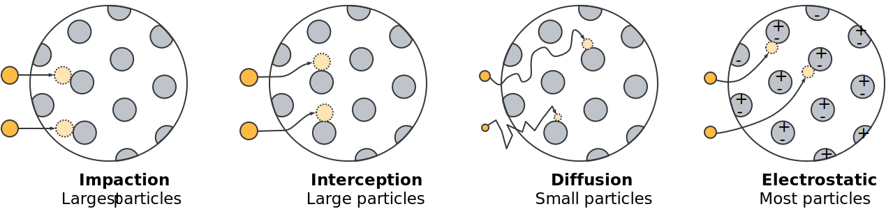

The primary function of any mask is to filter particle contaminants out of air as it passes
through the mask, which is relevant to preventing the spread of the COVID-19
and other respiratory diseases. Filtration occurs as a result of several mechanisms, including
impaction, interception, diffusion,
and electrostatic attraction.

Impaction tends to dominate for larger particles,
while diffusion is most significant for smaller particles. Electrostatic charges
in the mask, as are typically present in N95-compliant masks, tend to enhance
particle filtration but also tend to hold up rather poorly when the mask
is sanitized. For example, washing most N95-compliant masks with soap and water
will significantly reduces their filtration properties.
Filtration versus pressure drop
This first viz examines the filtration properties of common materials, using the data from
Rogak et al. In addition to filtration,
this viz considers the effect of a second important property: pressure drop.
Pressure drop denotes resistance. Lower pressure drops are preferable in that they
make for a more breathable mask and result in less leakage around the mask.
A good mask has a balance of both of these properties. The following plot considers
these properties for some common materials. Uncertainties in this data are generally larger for low
fitration efficiencies (negative filtration efficiencies occasionally reflect this; they
are artifacts of the measurements and are not physical).
Materials are coded according to their structure.
For material codes, the first component denotes the material structure, such as nW
for non-woven; followed by an optional x* code to
denote if multiple layers were used during the test
(e.g., x2 for two layers of the material); and finally an optional code
denoting if a treatment was applied to the mask (i.e., HS for
heat treatment, IPA for isopropyl alcohol treatments, WD
for laundering, and SW for washing with soap and water).
In the plot below, dashed lines correspond to line of constant quality, using
the natural number as a base ane pressures in kPa. A good (or high) quality denotes a
hybrid of good filtration while maintaining a lower pressure drop. Masks with
the highest quality in this study include N95-compliant and surgical masks.
For more details on the precise interpretation of quality we refer the reader
to Rogak et al. and the references
therein.
Legend
Visualization controls
Diameter selectorda = microns
Material types
|
|
|
|
|
Size-resolved mask filtration
Not all particle sizes are filtered in the same way. For example, small particles
tend to pass through masks more easily, resulting in lower filtration efficiencies.
This second viz examines the size-resolved mask filtration data. Generally, points higher on
the plot are preferred, through, these materials may result in an unreasonable pressure
drops that make the mask uncomfortable to wear.
Note that the curves all have a similar trend, where the filtration
efficiency decreases as the particles get smaller (to the left).
The most penetrating particle size (MPPS), that is, the minimum
in these kinds of curves, typically occurs in the 50-500 nm range and
is the focus of several other similar studies (cf. references in
Rogak et al.). Here we
focus on the larger particles, which remain relevant for bioaerosol applications.
In this plot, the black, dashed line indicates an
estimate of the filtration expected for a multi-layered mask,
which can include up to three layers, as selected using the
dropdown boxes below.
Estimates for multi-layered masks are only approximate, computed using
the product of filtration efficiencies for individual layers.
This also gives no indication of the feasibility of the different layers,
as they do not have a standardized weight or pressure drop. We again refer
the interested reader to
Rogak et al.
for a more detailed discussion.
Coloured lines indicate individual filter layers, which can be added,
removed, or changed using the dropdown boxes. The colours themselves
correspond to the material classes shown in the plot above (for example,
yellow is for knitted materials).
Note that some materials contribute very little to the filtration properties but
may have other advantages, such as absorbing moisture inside the mask.
We also note that the focus of this data was also on
the materials themselves. As such, these curves do not consider
leakage around the mask, which is another important feature in
constructing an effective mask.